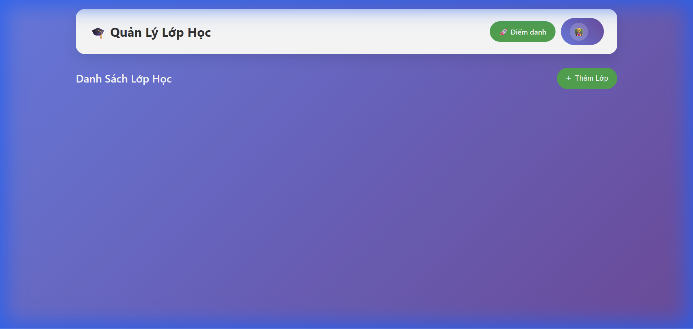
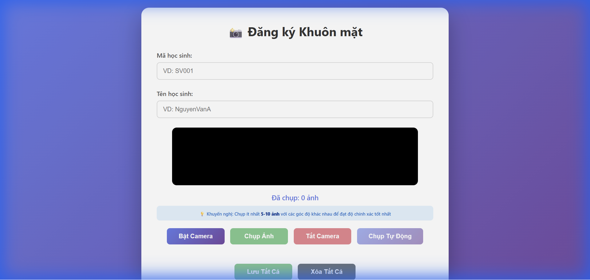

Giải pháp quản lý lớp học bằng nhận diện khuôn mặt
FaceCheck là hệ thống điểm danh tự động thông minh giúp tối ưu hóa quy trình quản lý học sinh/sinh viên.
Sử dụng công nghệ Thị giác máy tính (Computer Vision) và AI để loại bỏ việc điểm danh thủ công, đảm bảo tính chính xác và tiết kiệm thời gian.
Node.js, Express.js
Python (AI Service)
YOLOv8 (Detection)
face_recognition / DeepFace
MySQL / SQLite
Sequelize ORM
EJS Templating
HTML5, CSS3, JavaScript
[ Camera / Webcam ]
↓
[ Xử Lý Ảnh (Python AI Service) ] → [ Nhận Diện Khuôn Mặt ]
↓
[ Server Node.js ] ← [ Cơ Sở Dữ Liệu ]
↓
[ Giao Diện Web (Giáo Viên/Admin) ]
Đăng Nhập

Quản Lý Lớp Học

Đăng Ký Khuôn Mặt